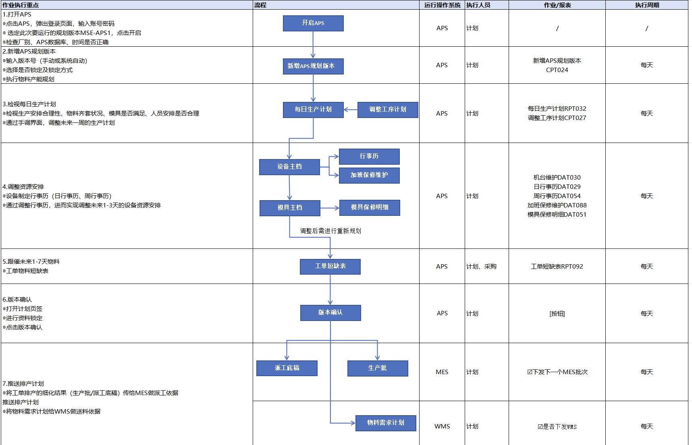
车间排产是基于现有产能进行生产工单排产计划的制定与执行。在月度产能规划的基础上，计划部门进一步细化到日排产计划，进行设备资源、模具资源的微调，跟催物料齐套，最终将排产结果推送给MES和WMS执行。
重点说明：
1）基于现有产能，进行生产工单排产计划的制定。
车间排产是基于现有产能进行生产工单排产计划的制定与执行。在月度产能规划的基础上，计划部门进一步细化到日排产计划，进行设备资源、模具资源的微调，跟催物料齐套，最终将排产结果推送给MES和WMS执行。
重点说明：
1）基于现有产能，进行生产工单排产计划的制定。

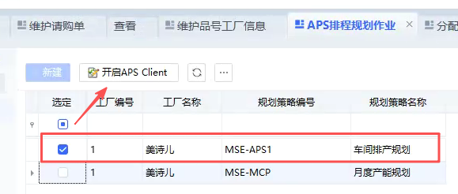
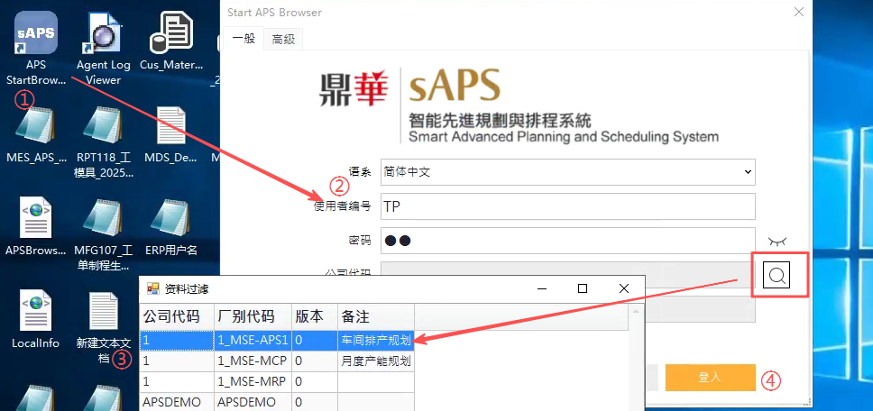
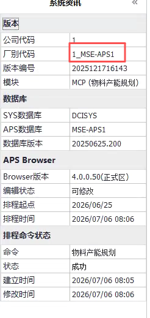
方式一：在E10的APS排程规划作业，选定此次要运行的规划版本MSE-APS1，点击APS Client，系统自动跳转开启APS。
方式二：双击打开APS，输入账号密码，在搜索框中选择此次要运行的版本MSE-APS1，点击登录后进入APS。
打开APS后检查厂别、APS数据库、时间是否正确，避免进错版本。


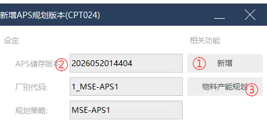
计划 >> 新增APS规划版本
执行周期：每天
1. 新增APS规划版本会让APS重新从E10和MES获取最新的数据，再进行排程运算。只有当APS需要抓取E10或MES的最新数据时才去新增APS规划版本，其他情况只需要进行重排即可。
2. 排程和重排都需要选择"不锁定"的选项（后续模拟时可按需调整）。
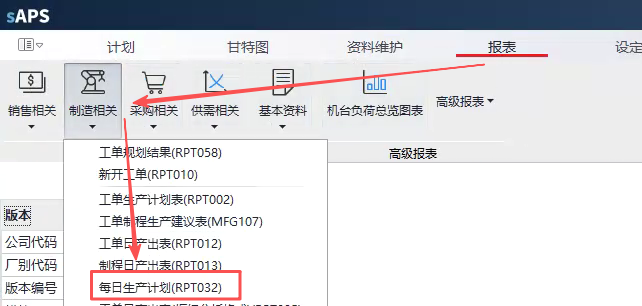
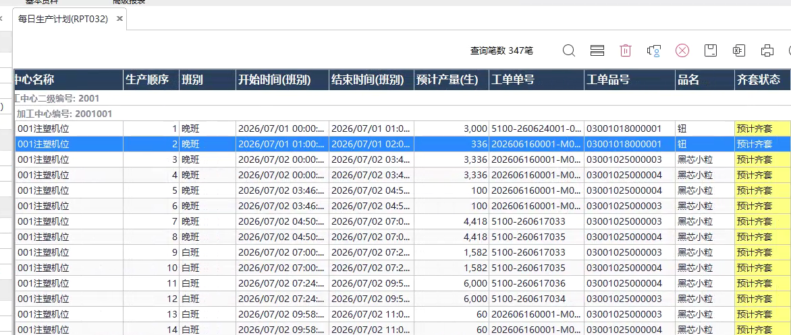
报表 >> 制造相关 >> 每日生产计划(RPT032)
执行周期：每天
1. 检视生产安排合理性：查看每日生产计划(RPT032)，确认各工单排程是否合理。检查工序顺序、加工时间、换线时间等是否符合预期。
2. 检视物料齐套状况：确认所需物料是否已到位或可按时到位。
3. 检视模具是否满足：确认所需模具是否可用、无冲突。
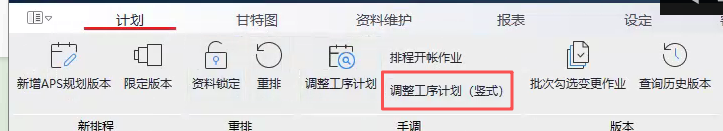
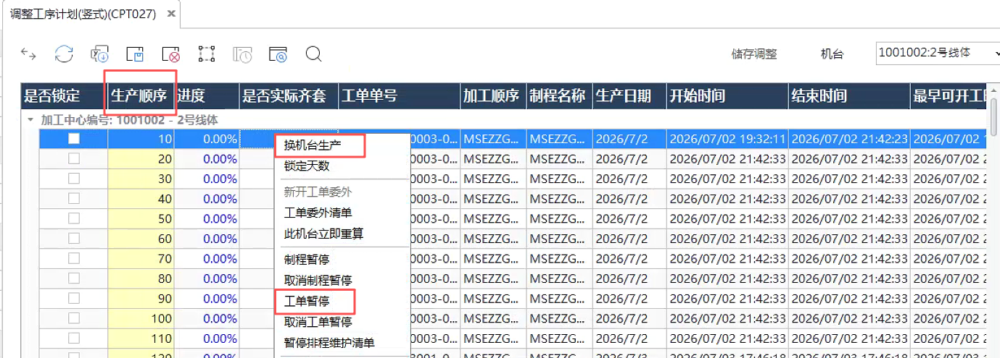
计划 >> 调整工序计划(CPT027)
通过"调整工序计划"手调界面对未来一周计划进行调整，如：
— 调整工单生产顺序或时间
— 调整工单所在机台
— 调整工单为暂停
— 调整工单的排产计划
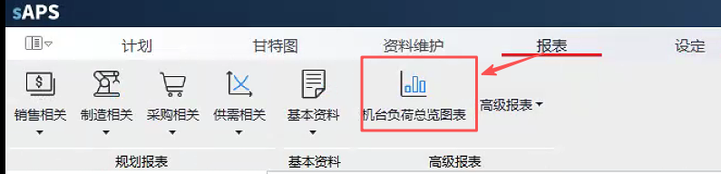

报表 >> 制造相关 >> 机台负荷总览表（ARP001）
1. 计划通过查看机台负荷表，了解依照生产需求的预计产能负荷状况，依此判断如何安排未来1-3天的设备资源情况。
2. 设备产能由行事历设置的时间转换而来，若要调整产能则需调整行事历。

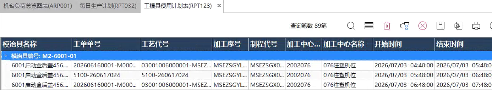
报表 >> 制造相关 >> 模具使用计划（RPT123）
1. 通过查看模具使用计划，了解各制程预计使用模具情况。
2. 模具产能限制由保修设置的时间转换而来，若要限制模具产能则需维护保修行事历。
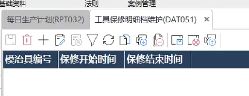
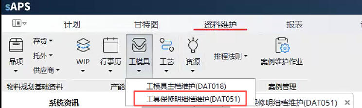
基础资料 >> 工模具 >> 模具保修明细（DAT051）
1. 通过调整保修记录，实现产能限制的调整，确定未来1-3天的模具资源安排。
2. 模具保修调整内容：模具编号、保修开始时间、保修结束时间。

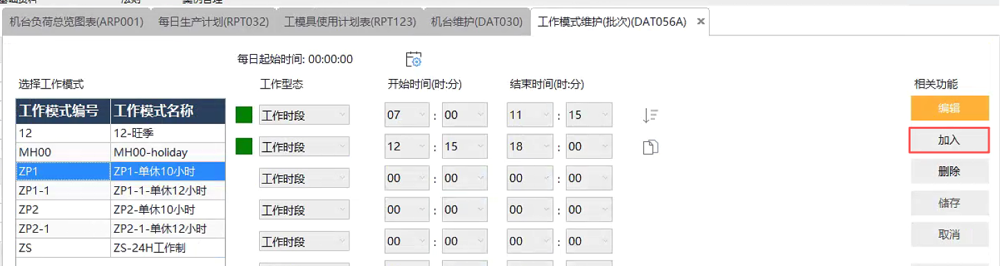
资料维护 >> 行事历 >> 工作模式维护(DAT056A)
执行步骤：工作模式 >> 周行事历 >> 日行事历 >> 机台行事历
1. 工作模式：定义一天内具体时段的工作状态，如 08:00~16:00 是工作时段，其余是非工作时段。

资料维护 >> 行事历 >> 周行事历维护(DAT054)
执行步骤：工作模式 >> 周行事历 >> 日行事历 >> 机台行事历
1. 定义一周七天（周一至周日）每天的工作模式，例如：周一至周六用"工作模式ZP1"，周日休息。

资料维护 >> 行事历 >> 日行事历维护(DAT029)
执行步骤：工作模式 >> 周行事历 >> 日行事历 >> 机台行事历
1. 定义特殊日期（如国定假日、加班日），可以覆盖周行事历的设定。


资料维护 >> 资源 >> 机台维护（DAT030）
执行步骤：工作模式 >> 周行事历 >> 日行事历 >> 机台行事历
1. 进入机台维护（DAT030），给每个机台维护对应的行事历（支持导入导出功能，可导出Excel后批量调整再导入）。
2. 实现对未来设备资源的精细化安排，调整内容包括：设备可用时间、班次安排、停机维护计划等。
3. 调整后的行事历将直接影响APS运算结果，确保排产可行性。
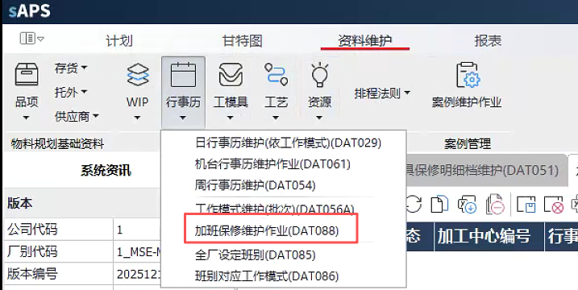
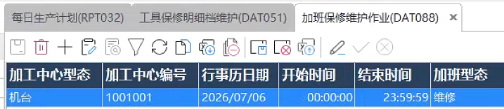
资料维护 >> 行事历 >> 加班保修维护（DAT088）
1. 进入加班保修维护（DAT088），给某个机台维护对应的保修记录或加班资讯（支持导入导出功能，可导出Excel后批量调整再导入）。
2. 调整内容包括：设备可用时间、保修维护计划等，实现对未来1-3天设备资源的精细化安排。
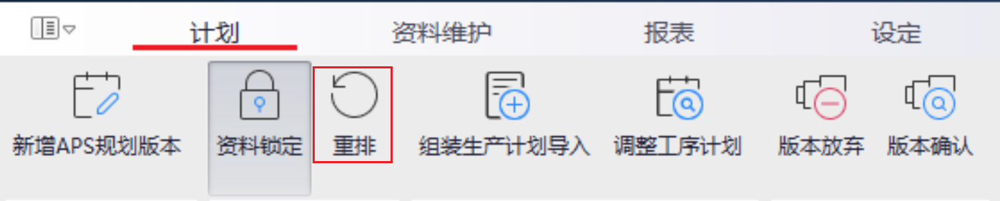
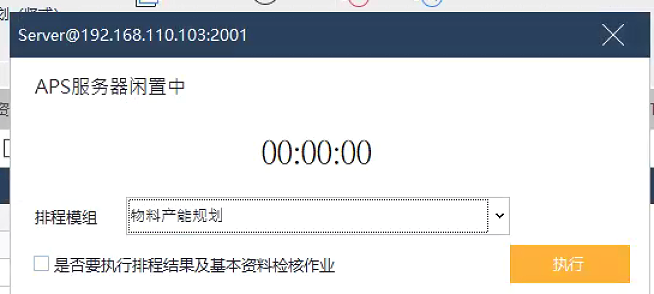

1. 基于前面做的模具/设备的产能调整，系统重新进行运算。
2. 排程模组：
— 物料规划：不考虑产能，算物料供需
— 产能规划：基于产能的调整，进行整体产能运算，不再重算物料
— 物料产能规划：重算物料的供需和现有产能的负荷
3. 若需再调整资源：资源负荷 > 调整资源 > 重新运算验证。
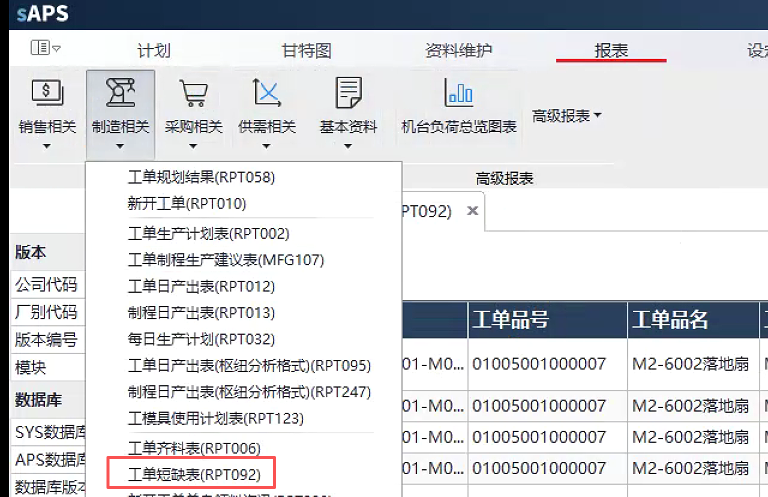
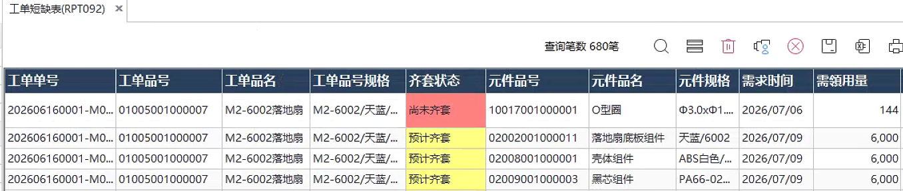
报表 >> 制造相关 >> 工单短缺表（RPT092）
重点跟催未来1-7天内计划投产工单的缺料情况，确保生产计划执行时物料齐套，避免因缺料导致停线。
1. 查看工单物料短缺表(RPT092)：系统算出未来1-7天内预计短缺的物料，按短缺严重程度排序，优先跟催关键物料。
2. 执行人员协同：计划部门识别短缺物料，发起跟催需求；采购部门接收跟催信息，紧急协调供应商交期。
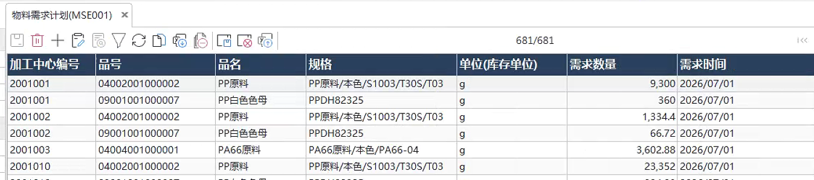
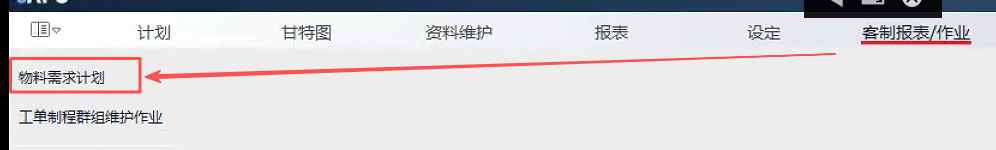
客制报表/作业 >> 物料需求计划（MSE001）
根据工单的排产计划，得到物料需求计划，即：哪个产品在哪个加工中心上在什么时间需求多少数量。
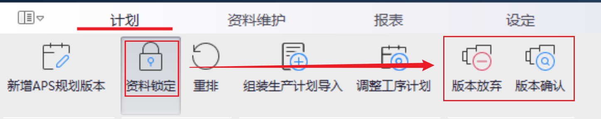
计划 >> 版本确认/放弃
执行周期：每天
1. 资料锁定之后才会出现版本确认/放弃的按钮，确保当前排产数据不被其他操作覆盖。
2. 版本确认后，排产计划下发至车间执行，后面在MES或WMS中接续进行操作。
3. 版本放弃是放弃此版的规划结果，下次可重新开启一个新版本。
4. 计划部门持续监控执行情况，必要时启动新一轮排产。
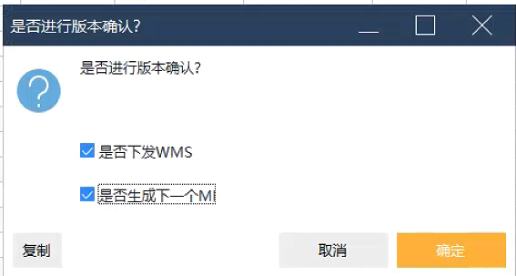
执行周期：每天
推送至MES：
1. 版本确认后勾选"是否生产下一个MES批次"（可定时），即生产批，根据工单的排产计划APS推送未来1天的生产批给MES。
2. 将每日生产计划推送至MES的派工底稿中，作为MES派工依据（自动推送，无需勾选）。
推送至WMS：
勾选"是否下发WMS"（可定时），根据工单的排产计划，APS推送物料需求计划给WMS做送料依据。